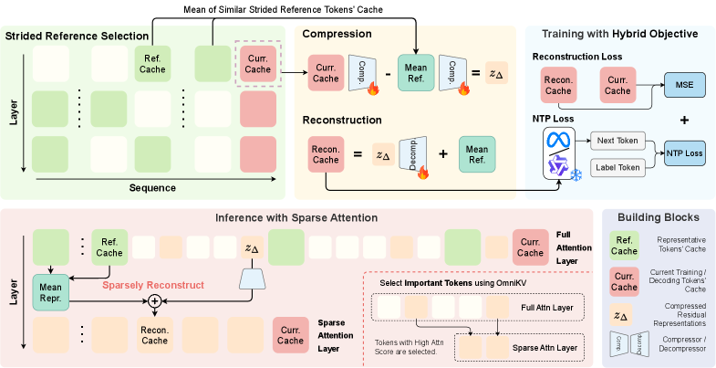

Why it matters왜 중요한가
A Llama-3.1-8B model at 128k context with batch size 8 needs >130 GB of KV cache — more than a single GPU holds. That linear-in-length growth, not the weights, is what kills long-context and agentic inference.
Llama-3.1-8B을 128k 컨텍스트·배치 8로 돌리면 KV 캐시만 130 GB 이상 필요하다 — GPU 한 장에 안 들어간다. 가중치가 아니라 길이에 선형으로 커지는 이 KV 캐시가 롱컨텍스트·에이전트 추론을 죽인다.
Most fixes either evict tokens (risk dropping the one you need) or project to low rank assuming local similarity. DeltaKV's contribution is empirical honesty: it measures that KV redundancy is global, reframes compression as residual coding against retrieved references, and — crucially — ships a serving engine (Sparse-vLLM) so the paper savings become real wall-clock speedups instead of theoretical FLOP counts.
기존 방법은 대개 토큰을 버리거나(정작 필요한 토큰을 날릴 위험), 국소적 유사성을 가정해 저랭크로 투영한다. DeltaKV의 기여는 측정에 근거한 정직함이다: KV 중복성이 전역적임을 실측하고, 압축을 검색된 참조 대비 잔차 부호화로 재정의하며, 무엇보다 서빙 엔진(Sparse-vLLM)까지 함께 내놔서 종이 위 절감이 아니라 실제 벽시계 속도 향상으로 이어지게 한다.

By the numbers핵심 숫자
Two observations that motivate the method방법을 이끈 두 가지 관찰
Long-range, not local
Prior low-rank / clustering methods assume similar tokens are neighbors. Measured on real KV caches, over 60% of a token's most-similar past token sits more than 16 positions away, with mean cosine similarity 0.92. Compression must look globally, so DeltaKV retrieves references from the whole history — not just a local window.
기존 저랭크·클러스터링 기법은 비슷한 토큰이 이웃에 있다고 가정한다. 실제 KV 캐시에서 재보니, 각 토큰의 가장 비슷한 과거 토큰의 60% 이상이 16칸 넘게 떨어져 있고 평균 코사인 유사도는 0.92였다. 압축은 전역을 봐야 하며, DeltaKV는 국소 창이 아니라 전체 히스토리에서 참조를 검색한다.
Subtract the shared background
KV states are strongly anisotropic: a few dominant, high-norm directions encode common structure shared by many tokens. Subtracting a globally-retrieved reference removes that shared "background," leaving a low-magnitude, near-zero, noise-like residual — a much flatter spectrum that quantizes and compresses far more easily than the raw KV.
KV 상태는 강한 비등방성을 띤다 — 소수의 지배적·큰 노름 방향이 여러 토큰이 공유하는 공통 구조를 담는다. 전역에서 검색한 참조를 빼면 그 공유 "배경"이 제거되고, 남는 건 크기가 작고 0 근처에 몰린 노이즈 같은 잔차다. 스펙트럼이 훨씬 평평해져 원본 KV보다 양자화·압축이 훨씬 쉽다.
In one diagram한 장의 그림
How it works어떻게 작동하나
- Retrieve global references.전역 참조 검색. Keep a strided sample of past KV states; for each new token, fetch its top-k nearest (by L2) and average them into KV_R. All done pre-RoPE so it's position-invariant and generalizes across lengths. 과거 KV 상태를 일정 간격(stride)으로 샘플링해 두고, 새 토큰마다 L2 기준 top-k 최근접을 뽑아 평균 KV_R을 만든다. 전 과정이 RoPE 적용 전(pre-RoPE)이라 위치 불변이고 길이 일반화가 된다.
- Encode the residual.잔차 인코딩. A 2-layer compressor MLP projects both KV_i and KV_R to a latent space; store only their difference z∆ — small, near-zero, and highly quantizable. 2층 압축 MLP가 KV_i와 KV_R을 잠재공간으로 투영하고, 그 차이 z∆만 저장한다 — 작고 0에 몰려 있어 양자화가 잘 된다.
- Train lightweight, keep the LLM frozen.가볍게 학습, LLM은 동결. Only the compressor/decompressor learn, with a hybrid MSE + next-token-prediction loss so attention-critical low-magnitude features survive. ~8 GPU-hours for a 7B/8B model. 압축기/복원기만 학습하며, MSE + 다음토큰예측 하이브리드 손실로 어텐션에 중요한 작은 특징까지 보존한다. 7B/8B 모델에 약 8 GPU-시간.
- Reconstruct on demand under sparse attention.희소 어텐션 하에서 필요할 때만 복원. Paired with OmniKV: a few "filter" layers keep full uncompressed KV, the rest store residuals and decompress only the tokens the sparse mask selects — KV̂ = f_d(z∆) + KV_R. OmniKV과 결합: 소수의 "필터" 층은 압축 없이 풀 KV를 유지하고, 나머지 층은 잔차를 저장했다가 희소 마스크가 고른 토큰만 복원한다 — KV̂ = f_d(z∆) + KV_R.
- Serve with Sparse-vLLM.Sparse-vLLM로 서빙. A custom engine decouples memory management from execution (tiered Full-Pool/Latent-Pool cache manager, fused L2-search + reconstruction kernels) so the compression becomes real throughput, not just fewer bytes. 메모리 관리와 실행을 분리한 전용 엔진(계층형 Full-Pool/Latent-Pool 캐시 매니저, L2 검색+복원 융합 커널)으로 압축을 바이트 절감이 아닌 실제 처리량으로 바꾼다.
Accuracy vs. memory (LongBench, Llama-3.1-8B)정확도 대 메모리 (LongBench, Llama-3.1-8B)
| Method방법 | KR ↓ | CR ↓ | LongBench Avg ↑ |
|---|---|---|---|
| Full Cache | 100 | 100 | 50.0 |
| SnapKV (evict)(제거) | 30 | 30 | 49.8 |
| OmniKV (select)(선택) | 100 | 30 | 50.2 |
| OmniKV + DeltaKV | 45 | 30 | 50.2 |
| + DeltaKV† + 4-bit | 29 | 30 | 50.3 |
What to take away그래서, 가져갈 것
KV cache down to 45% (or 29% with 4-bit) at near-zero accuracy loss, plus ~2× decode throughput and 2× the batch size at 512k. Practical, deployable compression — not a paper-only FLOP count.
KV 캐시를 45%(4-bit 병용 시 29%)로 줄이면서 정확도 손실 거의 0, 512k에서 디코딩 처리량 약 2배·배치 크기 2배. 종이 위 FLOP이 아니라 실제 배포 가능한 압축이다.
Redundancy is global, not local. Over 60% of a token's nearest neighbor is >16 positions away — so "residual-vs-global-reference" beats local low-rank projection and windowed eviction on the same budget.
중복성은 국소가 아니라 전역이다. 각 토큰의 최근접 이웃 60% 이상이 16칸 넘게 떨어져 있다 — 같은 예산에서 "전역 참조 대비 잔차"가 국소 저랭크 투영·창 기반 제거를 이긴다.
The unsung contribution is Sparse-vLLM: a serving engine built for irregular sparse/compressed KV layouts. Many compression papers die on integration; co-designing the system is what turns theory into speed.
숨은 기여는 Sparse-vLLM이다 — 불규칙한 희소·압축 KV 레이아웃을 위한 서빙 엔진. 많은 압축 논문이 통합 단계에서 좌초하는데, 시스템까지 함께 설계한 것이 이론을 속도로 바꾼다.